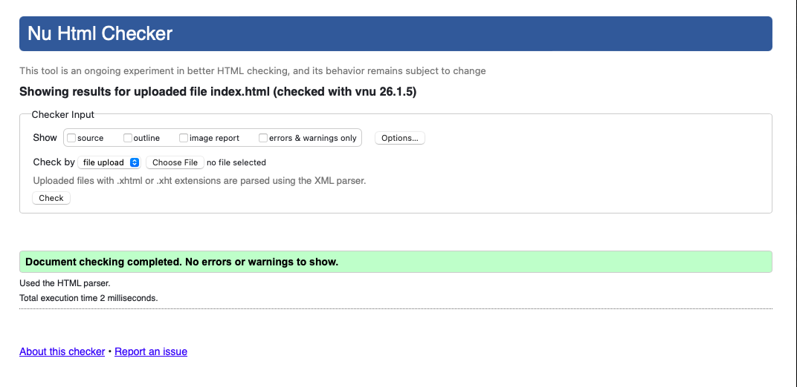
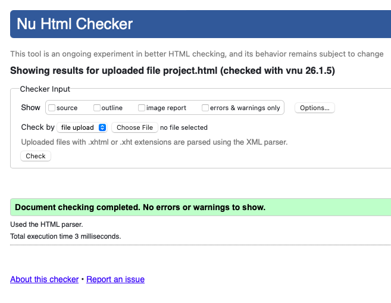
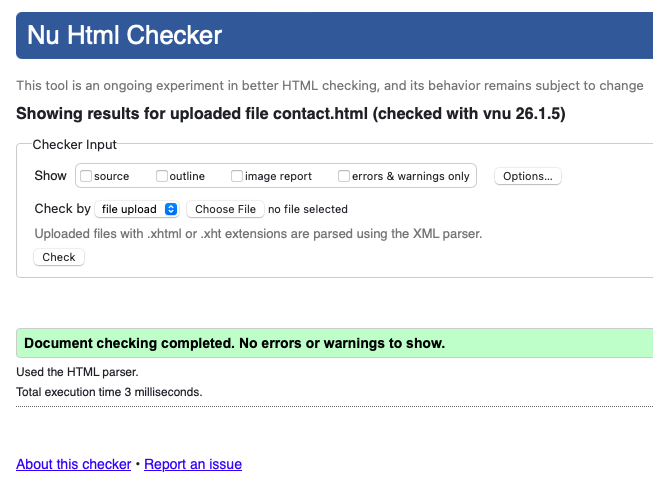
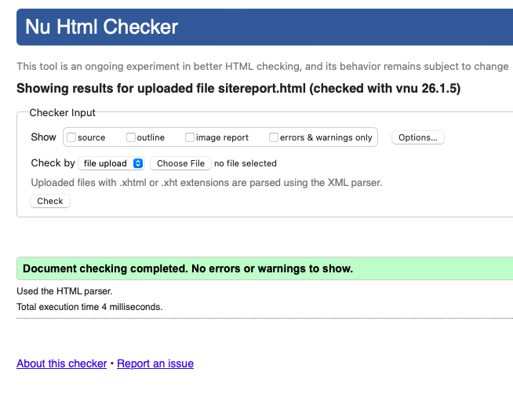
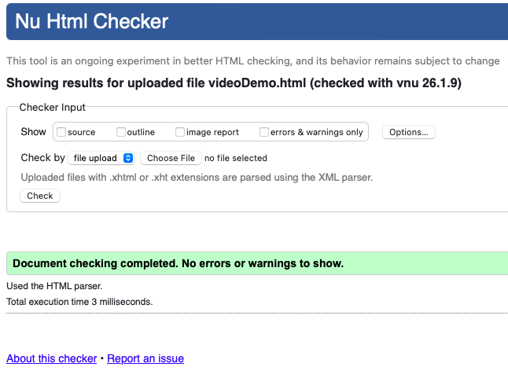
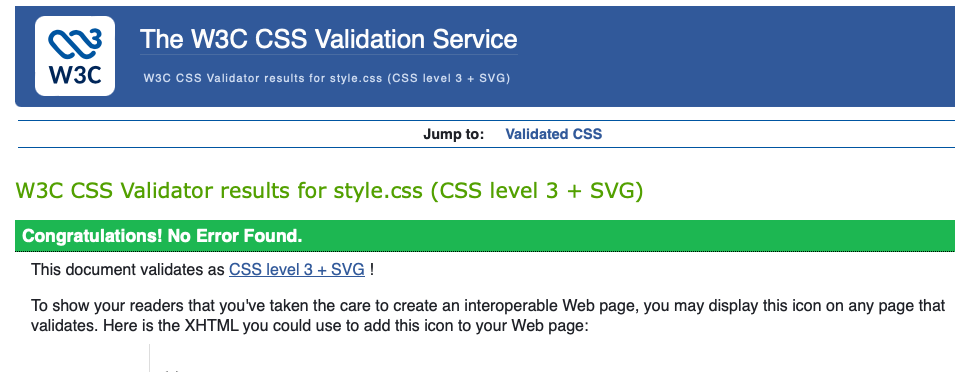

Site Report
This site report explains my experience of learning the basics of web development during this module. Creating this website was a new and interesting experience for me,as i had never build a website before. Throughout the module, I gained practical skills and confidence in using web technologies.The process helped me understand how websites are planned, designed, and developed step by step.
At the start of the module, I had very little knowledge of web development. Learnings HTML helped me understand how to structure web pages using headings, paragraphs, links, and navigation menus.
Learning CSS was more challenging but also very rewarding. I learned how to style web pages using colours,fonts,spacing, and layouts to improve appereance and usability.Debugging CSS issues taught me patience and problem-solving skills, as small errors could affect the entire layout. Over time,I became more confident in testing and refining my code.
For the design of my website, I chose a simple and clean layout with a consistent navigation bar across all pages. I used blue accent colours to create a modern look and improve usability.
During the development process, I also used AI-based tools in some places to help me understand errors,improve code structure,and clarify concepts. This support helped me learn more effectively while ensuring that I understood and implemented the solutions myself.
Video Demo of My Website
Below is a video demonstration of the website I created during this module You can watch how the pages are navigated and see the layout in action.
Below are screenshots showing that my HTML and CSS code validates correctly using online validation tools.
     